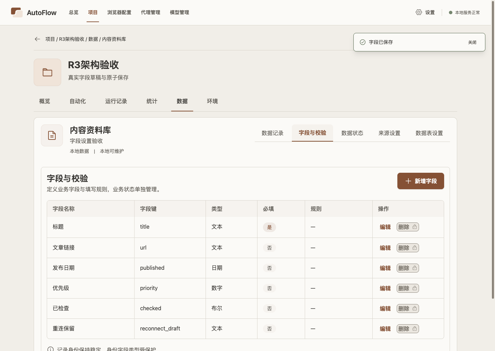
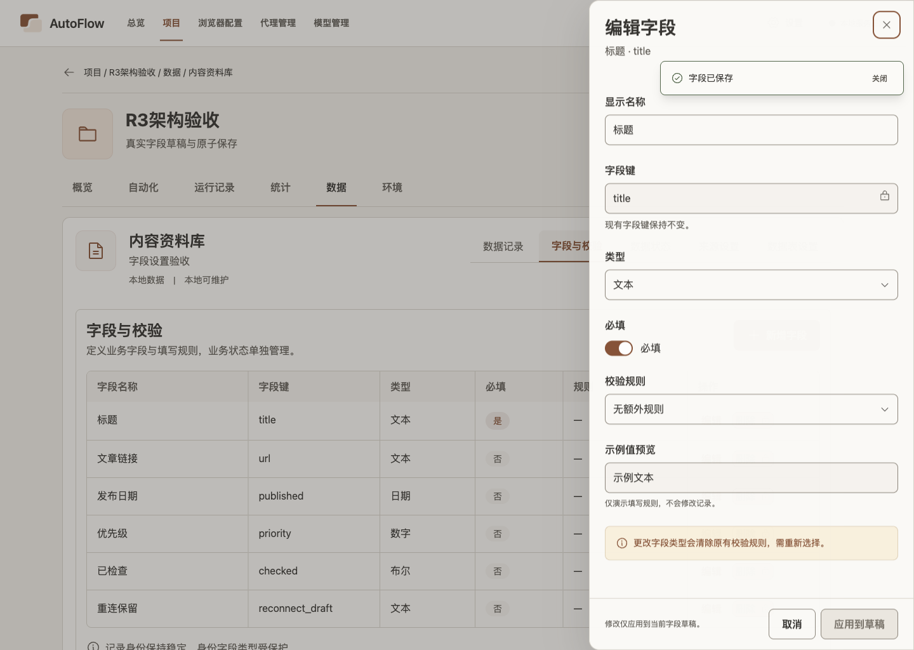
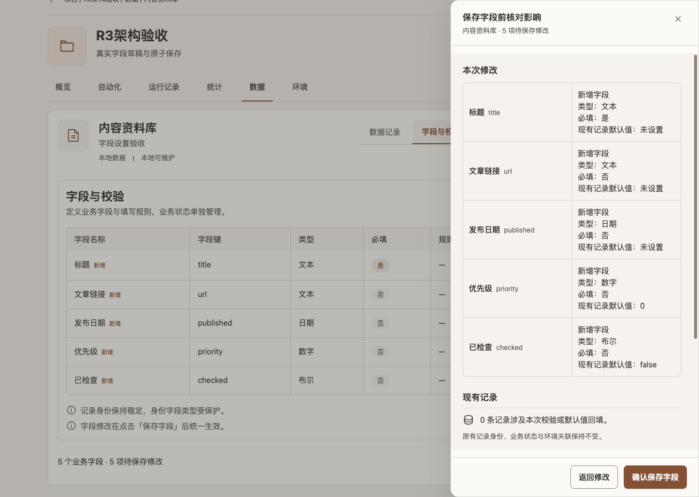
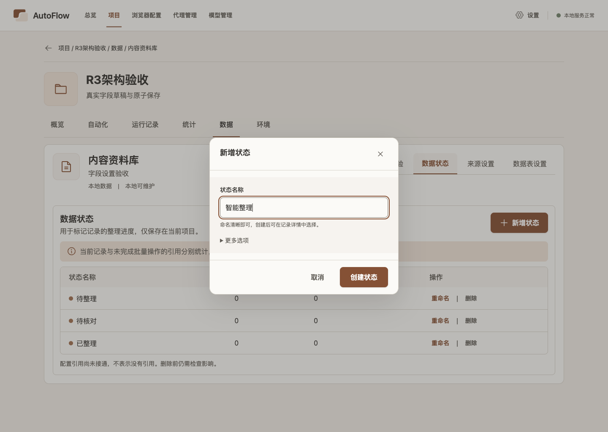
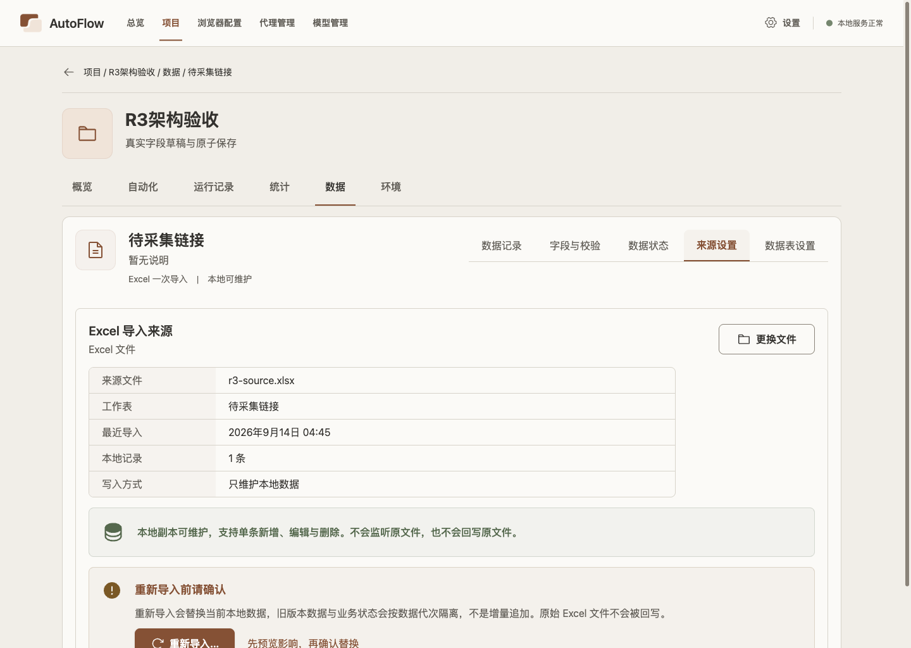
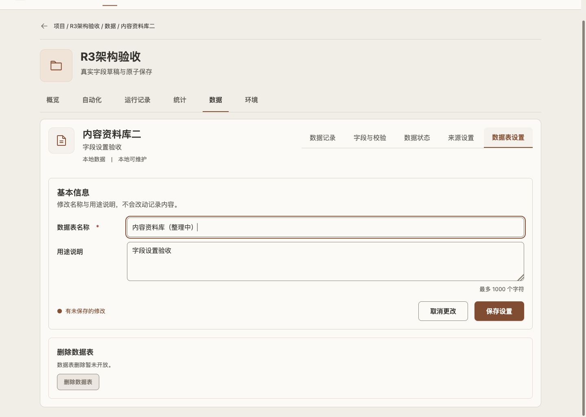
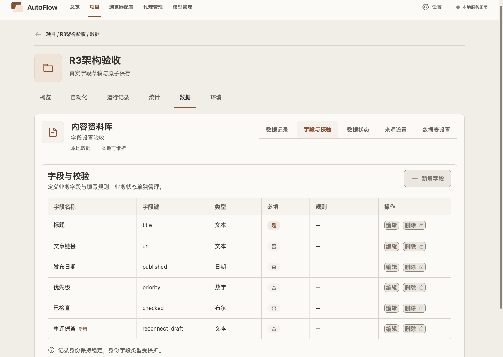
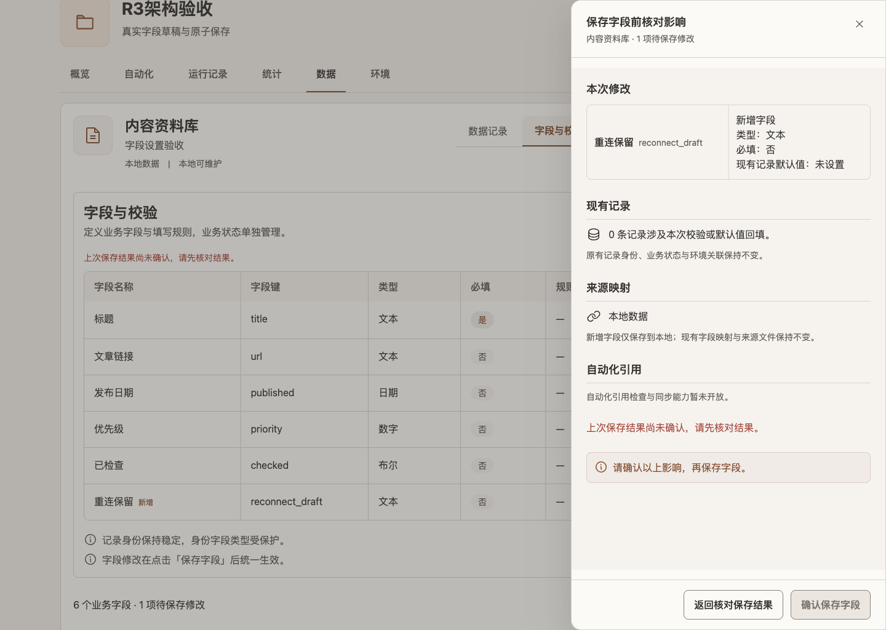
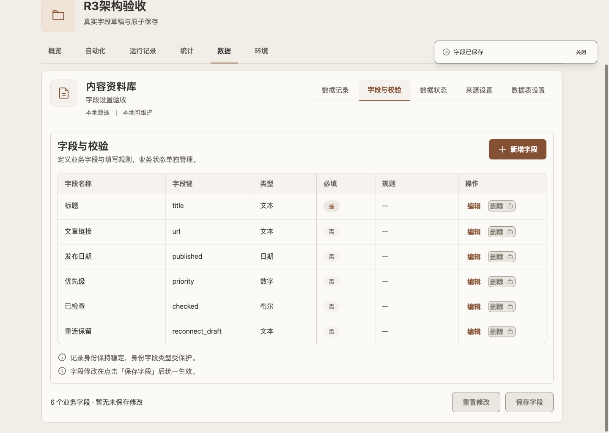

R3 Gallery 原型 / 实图逐页对照
Run: run-TIUvZc · build SHA 084c632d… · 1440×1024，另有 200% 截图与字体元数据。
分数与理由来自人工定性审查，关注结构、层级、密度、间距、控件位置和可读性；不是像素算法，也不代表用户批准。机器 result.json 继续保持 visualReview: pending。
字段与校验 89/100 · GF
页头、字段表格、主操作位置与原图层级接近；当前保留项目级导航与真实字段元数据，表格行略密、页面留白比例与原图仍有差异。


编辑字段抽屉 90/100 · GF
右侧抽屉、标题/键/类型/必填/规则及固定底栏与原图结构一致；当前控件间距更紧，附加说明和示例预览属于保留能力。


保存字段影响 88/100 · GF
右侧影响抽屉、逐字段变更、已有记录影响和确认底栏均可见；当前信息密度更高、抽屉略窄，文字层级比原图更拥挤。


数据状态 91/100 · GF
三条状态、右侧新增入口及仅名称的新增弹窗符合原图主结构；更多选项折叠保留旧能力，弹窗宽度和背景页面密度与原图略有差异。


Excel 来源 91/100 · GF
来源摘要、文件资料、替换入口、本地可维护说明和重导入警示层级清楚；当前项目外壳与内容卡宽度造成少量留白差异。


数据表设置 90/100 · GF
基本信息、名称/说明、脏状态、启用的保存按钮、取消操作及危险区结构与原图一致；当前外层导航更完整，表单纵向间距略紧。


恢复状态证据
以下三图是同一真实流程的权威 UI 状态，不参与六张 Gallery 原图评分。


